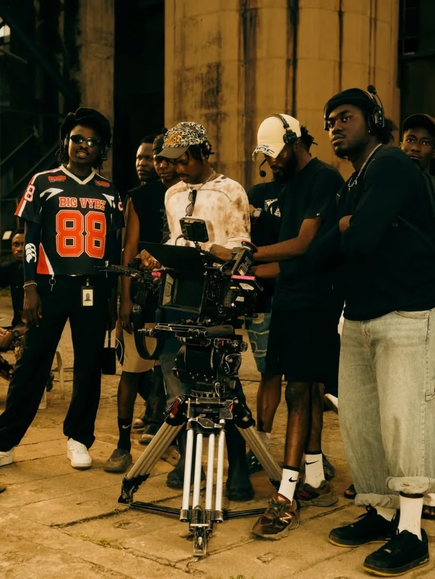
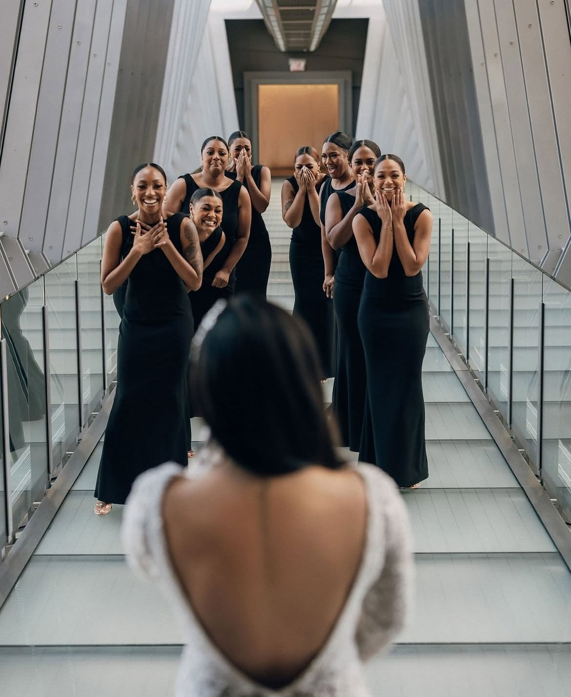
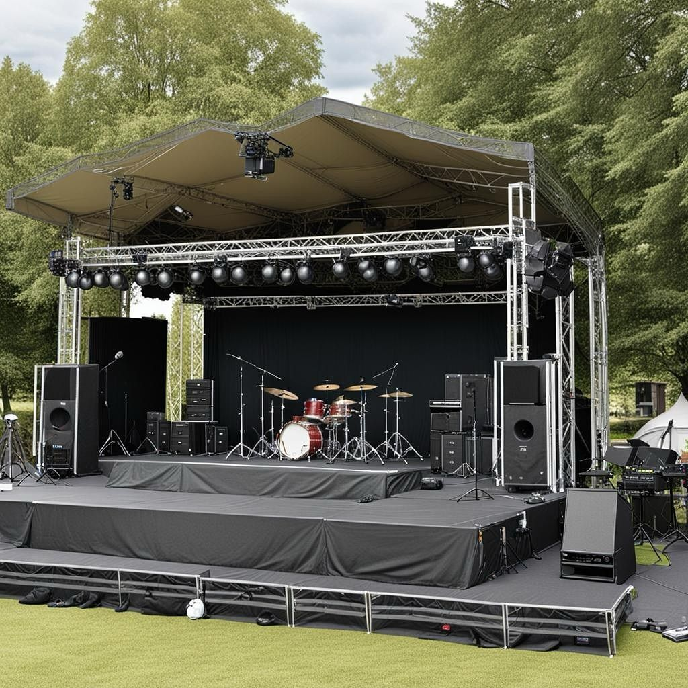

Film Production
Professional storytelling for businesses, brands, artists and individuals.
Every Story Deserves the Big Screen
Welcome to CineMe Productions. We create cinematic films, promotional videos, documentaries, music videos, and professional photography that bring your ideas to life.

Our team works together to plan, film and produce professional visual content for different clients.


Good lighting helps us create the correct mood, atmosphere and professional look for every scene.

We provide photography for events, portraits, creative projects and businesses.



Clear and professional sound is an important part of creating quality films and media productions.


We also work with stage productions, performances and creative visual projects.


Professional storytelling for businesses, brands, artists and individuals.
High-quality photography for events, portraits and commercial projects.
Creative video production for music, events, businesses and personal projects.
Professional editing, colour grading and post-production services.
We combine creativity, professional equipment and storytelling to create content that connects with audiences.
From the first idea to the final edit, we focus on producing quality work for every client.
Let CineMe Productions help turn your idea into something people can see, hear and remember.